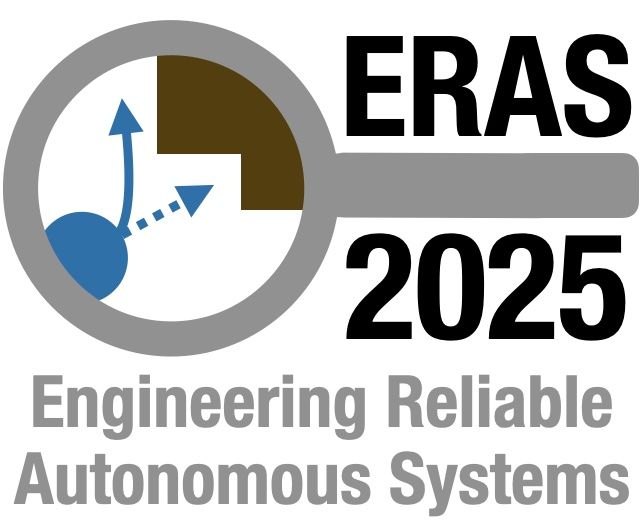
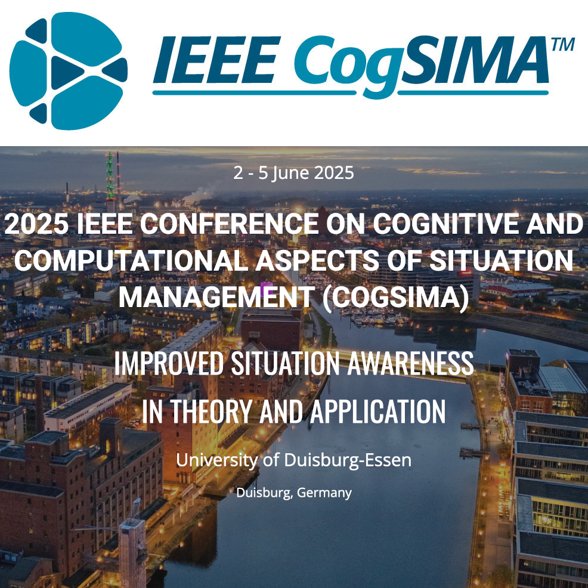
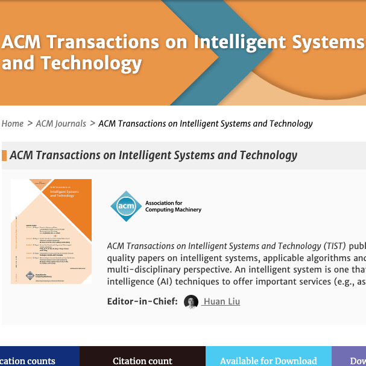
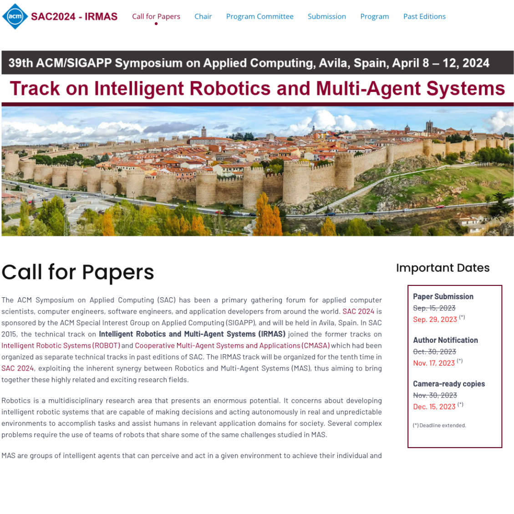

Research Presentation
Innate-Values-Driven Reinforcement Learning Based Cognitive Modeling
Innate values describe agents’ intrinsic motivations, which reflect their inherent interests and preferences to pursue goals and drive them to develop diverse skills satisfying their various needs. [2025 IEEE CogSIMA | 06/05/2025]
Edge Computing based Human-Robot Cognitive Fusion: A Medical Case Study in the Autism Spectrum Disorder Therapy
People with ASD usually have problems with social communication, regular interaction, and restricted or repetitive behaviors or interests. Robot-assisted therapy (RAT) is an emerging field that has attracted many researchers to study and benefited children with ASD. [2025 IEEE CogSIMA | 06/05/2025]
Bayesian Soft Actor-Critic: A Directed Acyclic Strategy Graph Based Deep Reinforcement Learning
A strategy describes the general plan of an agent achieving short-term or long-term goals under uncertainty, which involves setting sub-goals and priorities, determining action se- quences to fulfill the tasks, and mobilizing resources to execute the actions. [TIST Paper | 01/24/2024]
A Hierarchical Game-Theoretic Decision-Making for Cooperative Multiagent Systems Under the Presence of Adversarial Agents
This research proposes a new network model called the Game-Theoretic Utility Tree (GUT), combining the core principles of game theory and utility theory to achieve cooperative decision-making for MAS in adversarial environments. [SAC Paper | 03/28/2023]
Talks
Hierarchical Needs-driven Self-adaptive Multi-Agent Systems: From Individual Utilities to Swarm Intelligence
I was invited by the Cognitive Robotics and AI Lab (CRAI) in the College of Aeronautics and Engineering at Kent State University to give a talk about my current research on AI and Robotics. [Invited Talk | 06/06/2023]
The Latest Theories and Future Applications in Deep Reinforcement Learning of Multi-Agent/Robot Systems
I was invited by the Intelligent Manufacturing and Systems Laboratory in the Department of Mechanical Engineering at the University of Louisiana at Lafayette to give a talk about my current research on Deep Reinforcement Learning and Multi-Agent/Robot Systems. [Invited Talk | 05/14/2024]
News
-

Our paper was accepted by the 2025 IEEE International Conference on Engineering Reliable Autonomous Systems (ERAS)
Our paper "Digital Twin Synchronization: Bridging the Sim-RL Agent to a Real-Time Robotic Additive Manufacturing Control" has been accepted by the 2025 IEEE International Conference on Engineering Reliable Autonomous Systems (ERAS).
For more details, please check.
-

Three Papers Accepted by the 2025 IEEE Conference on Cognitive and Computational Aspects of Situation Management (CogSIMA)"
Our papers "Innate-Values-Driven Reinforcement Learning Based Cognitive Modeling", "Innate-Values-Driven Reinforcement Learning Based Cooperative Multi-Agent Cognitive Modeling", and "Edge Computing Based Human-Robot Cognitive Fusion: a Medical Case Study in the Autism Spectrum Disorder Therapy" have been accepted by the 2025 IEEE Conference on Cognitive and Computational Aspects of Situation Management (CogSIMA).
For more details, please check.
-
Dr. Yang is serving as the chair of the 2nd CMASDL workshop (W11) at AAAI 2025
Dr. Yang is serving as the chair and organizing the 2nd workshop (W11) on "Cooperative Multi-Agent Systems Decision-Making and Learning: Human-Multi-Agent Cognitive Fusion" at AAAI 2025.
For more details, please check.
-

Dr. Yang received an award from the NSF Foundational Research in Robotics (FRR) program
Dr. Yang received a $174,964 award from the NSF Foundational Research in Robotics (FRR) program for his research on "Cooperative Multi-Agent Systems Cognitive Modeling" over two years, starting July 1, 2024.
For more details, please check.
-
Dr. Yang gived a talk in the Department of Mechanical Engineering at the University of Louisiana at Lafayette
Dr. Yang has been invited by Prof. Sen Liu in the Department of Mechanical Engineering at the University of Louisiana at Lafayette to present his latest research on Deep Reinforcement Learning of Multi-agent/robot systems theories and potential application areas.
-

Dr. Yang Received the Faculty Scholarship Award 2024
Dr. Yang received the Faculty Scholarship Award (FSA) 2024 at Bradley University, which funded him with $6,000 to develop a new reinforcement learning (RL) model based on the Bayesian Strategy Network (BSN) for robot locomotion and planning.
For more details, please check.
-

Paper Accepted by the Top AI Journal "ACM Transactions on Intelligent Systems and Technology"
Our paper "Bayesian Strategy Networks Based Soft Actor-Critic Learning" has been accepted by the top AI journal "ACM Transactions on Intelligent Systems and Technology (TIST)".
-

Paper Accepted as a poster paper by the 39th ACM/SIGAPP Symposium On Applied Computing (SAC) 2024
Our paper "Bayesian Soft Actor-Critic: A Directed Acyclic Strategy Graph Based Deep Reinforcement Learning" has been accepted as a poster paper by the SAC 2024 on Intelligent Robotics and Multi-Agent Systems (IRMAS) track.
-
Organizing AAAI24 Workshop: "Cooperative Multi-Agent Systems Decision-Making and Learning: From Individual Needs to Swarm Intelligence"
Our proposal "Cooperative Multi-Agent Systems Decision-Making and Learning: From Individual Needs to Swarm Intelligence" has been accepted by the 38th AAAI Conference Workshop Program.
-

Receive the Caterpillar Fellowship $ 5K
Dr. Yang's proposal has been accepted by the Caterpillar Fellowship for funding in the amount of $ 5,000. This project will focus on 5G Connected Cooperative Multi-Agent Systems Localization and Navigation research and education.
-

Paper Accepted by the 38th ACM/SIGAPP Symposium On Applied Computing (SAC) 2023
Our paper "A Hierarchical Game-Theoretic Decision-Making for Cooperative Multiagent Systems Under the Presence of Adversarial Agents" has been accepted by the SAC 2023 on Intelligent Robotics and Multi-Agent Systems (IRMAS) track.
-

Paper Accepted by the AAAI 2023 Bridge Program
Our paper "Hierarchical Needs-driven Agent Learning Systems: From Deep Reinforcement Learning To Diverse Strategies" has been accepted by the 37th AAAI Conference on Artificial Intelligence and Robotics Bridge Program.
-

Paper Accepted by the ANT 2023
Our paper "A Strategy-Oriented Bayesian Soft Actor-Critic Model" has been accepted by the Elsevier Science 14th International Conference on Ambient Systems, Networks and Technologies (ANT 2023).